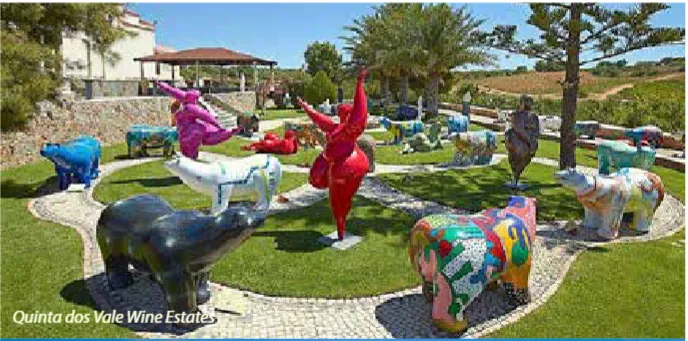
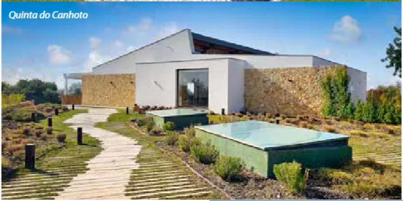
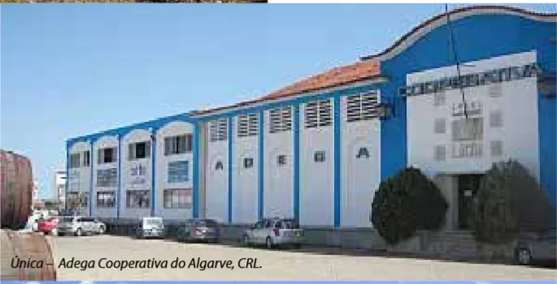

Kapitel 4 · Die portugiesischen Weinregionen
Weinregion Algarve
Kennzahlen (2022)
Rebfläche: 13.391
Gesamterzeugung: 12.000 hl; Durchschnittsertrag: 1.000 Liter/ha
Zahl der Kellereien: 34 (2017)
Geschichte
Nahe der Straße von Gibraltar gelegen, lag die Algarve schon immer auf der Route der Handelsschiffe des Mittelmeers. Lange lebten Tartesser, Phönizier und Karthager nur von den Ressourcen der Küste. In Milreu bei Faro gibt es einige Spuren des Weinbaus aus römischer Provinzzeit und später aus der Westgotenzeit. Weinberge blieben bis ins 5. Jahrhundert ein wichtiges Merkmal der Algarve, als große landwirtschaftliche Güter aufblühten. Im selben Jahrhundert brach die großflächige Landwirtschaft mit dem Untergang des Römischen Reiches zusammen. Zur Zeit von Gharb al-Andalus spielte die Rebe weiter eine wichtige Rolle, nicht nur für frische Trauben und Rosinen, sondern auch für Wein, der während der muslimischen Herrschaft in der Region nicht verschwand. 711 n. Chr. überquerte der Muslim Tariq ibn Ziyad die Straße von Gibraltar und besiegte den König der Westgoten. 712 eroberte Abd al-Aziz ibn Musa „al-Gharb al-Andalus“, das Gebiet „westlich von al-Andalus“. Während der fünf Jahrhunderte ihrer Herrschaft über die Algarve pflanzten die Mauren nicht nur Weinberge, sondern exportierten auch deren Wein. Nach der Rückeroberung der Algarve 1249 nutzten und verbesserten die Christen die von den Mauren hinterlassene Wirtschaftsordnung. Bis zur Ausrufung der Republik führten die portugiesischen Monarchen den Titel „König von Portugal und der Algarven“. In der Zeit der Entdeckungen wurde die Algarve ein wichtiger Ausgangspunkt und ein bedeutendes Zentrum des Weinexports. Das Erdbeben von 1755 verwüstete die Region, und danach ging die Bedeutung des Weinbaus zurück. Er litt, weil sich viele Zehntausende Hektar Weinberge nie von der Reblauskatastrophe erholten. Abgesehen von der weitreichenden Gründung von Genossenschaften durch den „Estado Novo“ (Salazar-Diktatur) gab es keine Umstrukturierung und Entwicklung des Weinbaus. Heute jedoch gewinnt der Weinbau der Algarve mit Qualitätsbezeichnungen auf regionaler und betrieblicher Ebene einen Teil seines früheren Ansehens zurück.
Karte der Weintourismus-Route
Kartenbeschriftung: Açores · Portugal continental · Graciosa · Pico · Terceira · Madeira · Porto Santo · Silves · Lagoa · Lagos · Portimão · Fluss Guadiana · Tavira · Faro
Terroir
Klima: feuchtgemäßigtes Klima mit sommerlicher Trockenzeit. Die südlichste Region Portugals ist durch die Gebirgszüge Serra do Caldeirão und Monchique vom Alentejo getrennt und hat daher ein eigenständiges, anderes Klima. Dies und die amphitheaterartige Ausrichtung nach Süden geben der Algarve ein ausgeprägt mediterranes Klima: geringe Temperaturschwankungen über das Jahr und wenig Niederschlag.
Klimaklassifikation nach Köppen: C (gemäßigt), Untergruppe Csa (Mittelmeerklima mit heißem Sommer) und in einigen angrenzenden Gebieten Csb (Mittelmeerklima mit warmem Sommer). Indizes des MCC-Systems (Tonietto & Carbonneau, 2004): heliothermischer Index (HI): +2, Kühle-Nacht-Index (CI): −1, Trockenheitsindex (DI): +2. Die Region ist trocken und wenig windbeeinflusst. Die wichtigsten Klimaprobleme sind Wasserstress und Sonnenbrand. Mittlere jährliche Sonnenstunden: > 3.000 h.
Niederschlag: 474 mm
Geologie: Die Comissão de Coordenação e Desenvolvimento Regional do Algarve, I.P. – CCDR (Regionale Koordinierungs- und Entwicklungskommission der Algarve) unterscheidet vier geologisch bestimmte Weinbauzonen. Das Litoral, die Küstenzone mit den meisten Weinbergen, besteht aus verwitterten Sandsteinen, Konglomeraten und Biokalkareniten. Der Barrocal, die Übergangszone zwischen Küstenebene und Bergen, die sich von Ost nach West durch die Algarve zieht, besteht aus Kalksteinen, Dolomiten, Mergeln und Kalkareniten, während die Beira-Serra, umgangssprachlich manchmal zum Barrocal gezählt, rote Sandsteine und vulkanische Asche aufweist (Silves, Monchique). Schließlich die Serra (Bergland) mit Tonschiefern, Grauwacken, Syeniten und Hornfelsschichten in Monchique.
Böden: überwiegend sandig. Nahe der Küste auch sandige Lehmböden, im Landesinneren und im Westen der Region sandige Ton-, Ton-Kalk- oder Schieferböden (psammitische Regosole, rote oder gelbe mediterrane Sandstein- und Tonschieferböden, Podsole und Auenböden).
Höhe der Weinberge: 20–100 m
Erzeugte Weintypen
IG-Weine Algarve bzw. Landweine Algarve:
Rot, Weiß, Rosé, roter Likörwein, weißer Likörwein. DO-Weine Lagoa, Lagos, Portimão und Tavira: Rot und Weiß.
Regionale Kontakte
Technische Informationen: Comissão Vitivinícola do Algarve (Weinbaukommission der Algarve), Estrada Nacional 125, Bemparece, 8400-429 Lagoa, Tel. 282 341 393,
Website: www.vinhosdoalgarve.pt
Kulturelle Informationen zum Wein der Region: Confraria dos Enófilos e Gastronómica do Algarve (Bruderschaft der Wein- und Feinschmecker der Algarve), Avenida 5 de Outubro, 8004-000 Faro;
Kontakt: Confraria dos Gastrónomos do Algarve (Bruderschaft der Feinschmecker der Algarve), Rua Padre Evaristo do Rosário Guerreiro 11, 8500-715 Portimão,
Mobil: 960 064 967; Museen: http://algarve.angloinfo.com/af/292/algarvemuseums-and-monuments.html
Hochschulen und Weinbauforschung: Universidade do Algarve, Campus da Penha, 8005-139 Faro; Tel.: (351) 289 800 100; www.ualg.pt; E-Mail: sfp@ualg.pt
Zertifizierungsstelle: Comissão Vitivinícola do Algarve, Estrada Nacional 125 – Bemparece (Räume des IVV), 8400-429 Lagoa, Tel.: 282 341 393, Fax: 282 341 396, E-Mail: cva.direccao@vinhosdoalgarve.pt,
Website: www.vinhosdoalgarve.pt
Informationen zu Erzeugern und Abfüllern:
http://www.ivv.min-agricultura.pt/np4/1736.html, Jahrbuch S. 250; in der Algarve selbst: http://www.visitalgarve.pt/pressroom.file.php?fileID=32&file=guia_vinhos_09.pdf
Weintourismus: Turismo do Algarve, Av. 5 de Outubro 18, 8000-076 Faro, Portugal, Tel.: 289 800 400, Fax: 289 800 489, E-Mail: turismodoalgarve@turismodoalgarve.pt;
Website: www.turismodoalgarve.pt und www.visitalgarve.pt. Eine ausführliche Broschüre über die Weine der Algarve gibt es hier: https://api.visitalgarve.pt/uploads/1/1/Downloads/Guias/Vinhos%20do%20Algarve_EN.pdf (Weinführer der Algarve).
Botanik (Biodiversität) und zugelassene Sorten
Rechtsgrundlage: Ministerialerlass Nr. 347/2015 vom 12. Oktober, Ministerialerlass Nr. 72/2014 vom 17. März und Gesetzesdekret Nr. 212/2004 vom 23. August.
Rotweine: Alfrocheiro (Tinta Bastardinha), Alicante Bouschet, Aragonez (Tinta Roriz), Baga, Bastardo (Graciosa), Cabernet Sauvignon, Caladoc, Carignan, Castelão, Chambourcin, Cinsaut, Corropio, Grand Noir, Grenache, Manteúdo Preto, Merlot, Monvedro, Moreto, Moscatel Galego Tinto, Negra Mole, Petit Verdot, Pexem, Pinot Noir, Syrah (Shiraz), Tannat, Tinta Barroca, Tinta Caiada (Pau Ferro, Tinta Lameira), Tinta Carvalha, Tinta Miúda, Tinto Cão, Touriga Franca, Touriga Nacional, Trincadeira (Tinta Amarela), Vinhão (Sousão), Zinfandel, Gewürztraminer und Moscatel Galego Roxo.
Weißweine: Alicante Branco, Alvarinho, Antão Vaz, Arinto (Pedernã), Bical (Borrado das Moscas), Chardonnay, Chasselas, Códega do Larinho, Diagalves, Encruzado, Fernão Pires (Maria Gomes), Gouveio, Larião, Malvasia Fina, Malvasia Rei, Manteúdo, Moscatel Graúdo, Mourisco Branco, Perrum, Rabigato, Rabo de Ovelha, Riesling, Sauvignon (Sauvignon Blanc), Semillon, Sercial (Esgana Cão), Síria (Roupeiro), Tália, Tamarez, Terrantez, Trincadeira das Pratas, Verdelho, Viognier und Viosinho.
Renommierte Weingüter
in der Region: Casa Santos Lima – Companhia das Vinhas, S.A. – Quinta do Patarinho
Lda., Tavira. Die Quinta do Patarinho gehört zur dynamischen Gruppe Casa Santos Lima, die in fünf Weinregionen Portugals tätig ist. 2022 erzeugte sie 170.000 kg Trauben; seitdem wird mit der Pflanzung neuer Weinberge kräftig erweitert. QBL Unipessoal Lda., Quinta do



Barranco Longo, Algoz, Silves. Erzeugung 2022: 120.000 kg Trauben.
Die Villa Alvor gehörte im 19. Jahrhundert dem bekannten Frederico da Paz Mendes, Visconde da Rocha de Portimão.

Den südlichen Teil des ursprünglichen Gutes erwarb 2019 die durch Vinho Verde bekannte Aveleda-Gruppe von seinem Nachfahren João Mendes. Erzeugung 2022: 120.000 kg Trauben.
Quinta dos Vales Wine Estate: Ein Visionär und Selfmade-Millionär hat sich nach erfolgreichem Unternehmertum in schwierigem wirtschaftlichem Umfeld den Traum erfüllt, ein eigenes Weingut in der Algarve zu schaffen, verbunden mit Kunst und ländlichem Wohnen in einer neuen Qualitätsdimension. Erzeugung 2020: 83.000 kg. Quinta do Canhoto. Adega Única – Adega Cooperativa do Algarve, CRL: Die Adega Cooperativa do Algarve entstand aus der Fusion der Genossenschaftskellereien von Lagoa und Lagos, mit Sitz in der früheren Adega Cooperativa de Lagoa. Die Kellerei war zur Zeit der Estado-Novo-Diktatur für Millionen Liter geplant, doch ihre Kapazität ist im Lauf der Zeit auf rund 20.000 Flaschen Rot-, Weiß- und Roséwein pro Jahr gesunken. Adega do Cantor – Quinta do Miradouro: ursprünglich das Weinbauprojekt des Sängers Sir Cliff Richard mit 26 Hektar Weinbergen und drei Luxusvillen mit eigenen Freizeitbereichen. Das Gut wurde 2021 an ein portugiesisches Unternehmen verkauft.
Ökologisch zertifiziert: Monte da Casteleja; Jaap Honekamp; Arvad; Morgado do Quintão